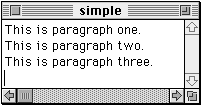

Range
The Range reference form specifies a series of objects of the same class
in the same container. You can specify the objects with a pair of indexes
(such aswords 12 thru 24) or with a pair of boundary objects (such aswords from paragraph 3 to paragraph 5).SYNTAX
every className from boundaryReference1 to boundaryReference2 pluralClassName from boundaryReference1 to boundaryReference2 className startIndex ( thru | through ) stopIndex pluralclassName startIndex ( thru | through ) stopIndexwhereclassName is a singular class ID (such as
wordorparagraph).pluralclassName is the plural class identifier defined by AppleScript or an application (such as
wordsorparagraphs).boundaryReference1 and boundaryReference2 are references to objects that bound the range. The range includes the boundary objects. You can use the reserved word
beginningin place of boundaryReference1 to indicate the position before the first object of the container. Similarly, you can use the reserved wordend
in place of boundaryReference2 to indicate the position after the last object in
the container.startIndex and stopIndex are the indexes of the first and last object of the range (such as
1and10inwords 1 thru 10).VALUE
The value of a Range reference is a list of the objects in the range. If the specified container does not contain all of the objects specified in the range, an error is returned. For example, the following reference results in an error.paragraphs 1 thru 3 of {1, 2, 3} --results in an errorEXAMPLES
The following examples and results use the Scriptable Text Editor document shown in Figure 5-2.Figure 5-2 The Scriptable Text Editor document "simple"

In the following example, the phrase
words from paragraph 1 to paragraph 2is a range reference that specifies the list of the words in
the first and second paragraphs.tell document "simple" of application "Scriptable Text Editor" get words from paragraph 1 to paragraph 2 end tell --result: {"This", "is", "paragraph", "one", � "This", "is", "paragraph", "two"}In the following example, the phrasewords of paragraphs 1 thru 2is a reference that consists of the referencewords(a synonym forevery word) and the containerparagraphs 1 thru 2(a range reference).tell document "simple" of application "Scriptable Text Editor" get words of paragraphs 1 thru 2 end tell --result: {{"This", "is", "paragraph", "one"}, � {"This", "is", "paragraph", "two"}}To get the result, AppleScript first gets the value of the container, which is a list of two paragraphs:{"This is paragraph one.", "This is paragraph two."}AppleScript then gets every word of the resulting list, which results in a list
of two lists:{{"This", "is", "paragraph", "one"}, � {"This", "is","paragraph", "two"}}NOTES
If you specify a Range reference as the container for a property or object, as infont of words 4 thru 6 of document "Mail Form"the result is a list containing the specified property or object for each object of the container. The number of items in the list is the same as the number of objects in the container. For example, the value of the reference in this example might be{helvetica, palatino, geneva}The first item in the list is the font of the fourth word, the second item is the font of the fifth word, and the third item is the font of the sixth word.To refer to a contiguous series of characters--instead of a list--when specifying a range of text objects, use the text element. Text is an element of most text objects, including all Scriptable Text Editor text objects. Text is also an element of AppleScript strings.
For example, compare the values of the following references.
words 1 thru 4 of "We're all in this together" --result: {"We're", "all", "in", "this"} text from word 1 to word 4 of "We're all in this together" --result: "We're all in this" text of words 1 thru 4 of "We're all in this together" --result: "We're all in this"